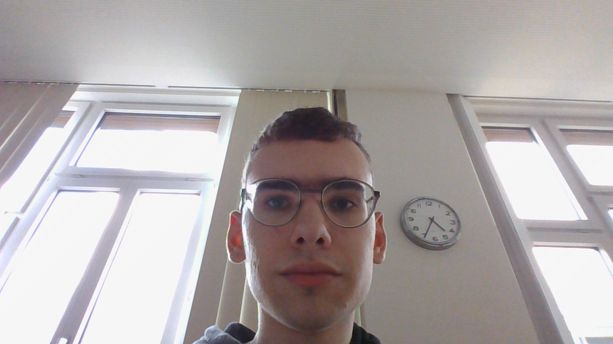
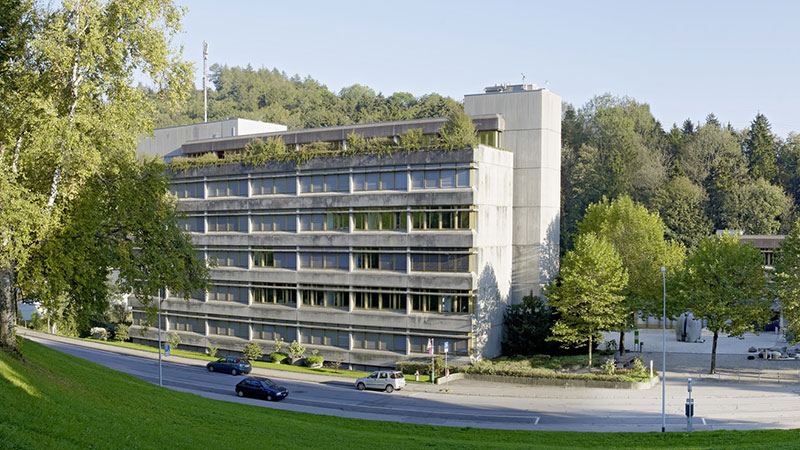
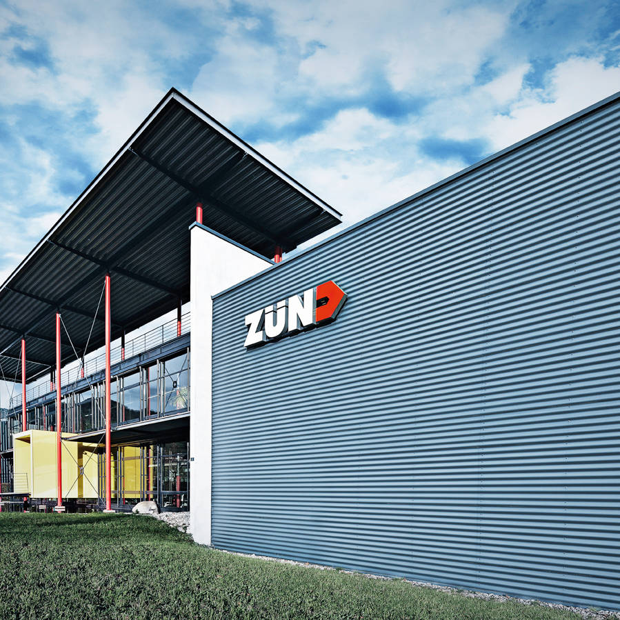

Über mich
Ich wurde in 2006 geboren und lebe in Eichberg. Eichberg ist ein wenig klein und abgeschieden aber deshalb ruhig, wobei mir diese Ruhe die Nachteile Wert sind.
Meine Hobbies sind:
Lesen
Programmieren
3D-Modelling
3D-Druck
Videospiele spielen, wobei ich auch gerne an welchen arbeite
Ich arbeite im Moment in der Zünd AG in Altstätten als Informatiker und gehen in die Berufsschule.


